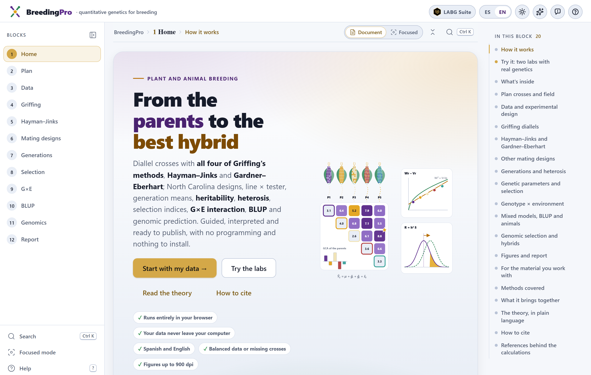
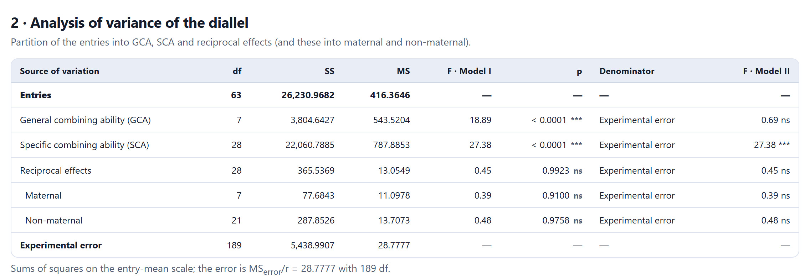
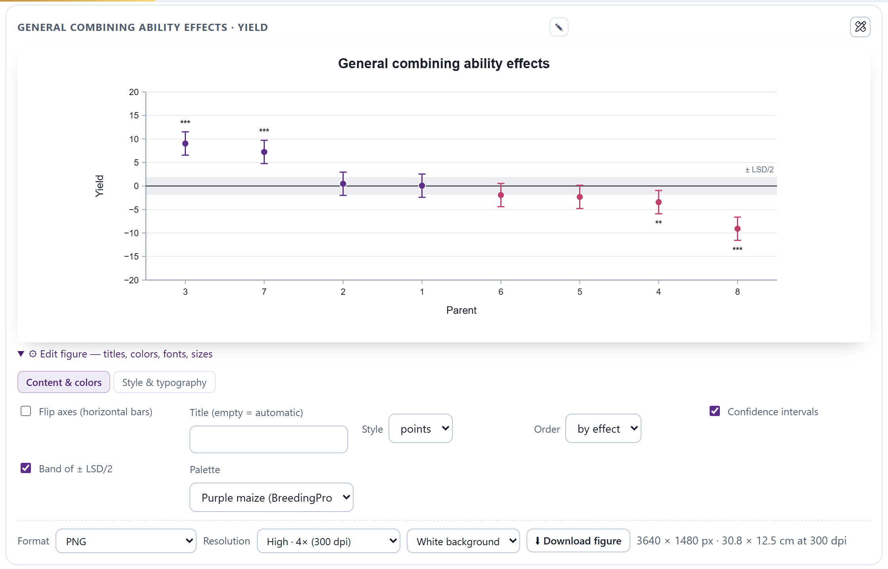
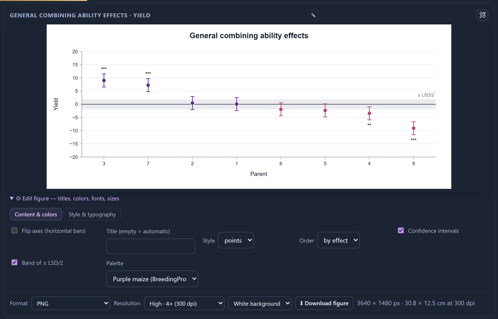
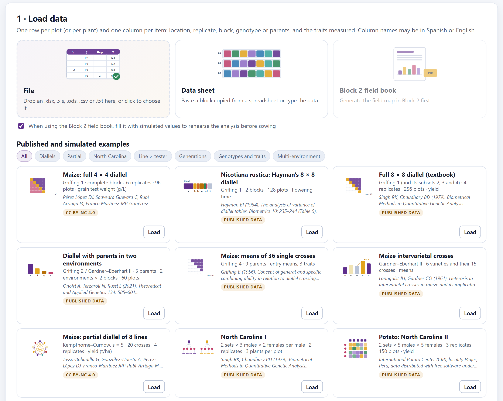

That digital object identifier (DOI) is the concept DOI: it always leads to the most recent version. Each archived version also has its own (version 1.0.0, 10.5281/zenodo.23005939). The citation of the program also appears at the end of every Block 12 report and in the How to cite section of the app’s home page.
BreedingPro runs entirely inside your browser. The files you open are read on your computer and are never sent to any server. You can analyze unpublished trials, data from a thesis in progress or materials protected by agreements with no risk of them leaving your machine.
The illustrations, diagrams and screenshots in this manual are original: they were generated with the program itself or with code written for the manual. The example data sets are described in Section I.7, each with its source; the simulated ones were generated with fixed seeds, and their true values are known.
The manual follows the same order as the app: twelve numbered blocks that appear, from top to bottom, in the sidebar on the left. Each chapter explains one block and carries its number —Chapter 3 is Block 3, and its sections, figures and tables are numbered 3.1, 3.2…—. It begins with the theory you cannot do without, describes what the block calculates and how to read it, and ends with step-by-step examples using the data that already come inside the program. The introduction comes before the blocks and is numbered separately: I.1, I.2…
The block’s color appears on the opening page of its chapter, on the section numbers, on the tab at the edge of the page and in the table of contents, and it is the same as in the strip on the cover. That way you can tell at a glance which part of the app you are in.
| Block | Name in the app | What it does |
|---|---|---|
| 1 | Home | Home page, two labs with simulated genetics, theory in plain language, references and how to cite |
| 2 | Plan | Crossing plan, seed and pollinations, trial layout, field book and power before sowing |
| 3 | Data | File loading, the role of each column, recognized design, data quality and field analysis |
| 4 | Griffing | General and specific combining ability with Griffing’s four methods |
| 5 | Hayman–Jinks | Hayman’s partition, genetic components, Wr–Vr graph, Gardner–Eberhart and heterosis |
| 6 | Mating designs | North Carolina I, II and III, triple test cross, line × tester and partial diallels |
| 7 | Generations | Scaling tests, generation mean models, variances, heterosis and effective factors |
| 8 | Selection | Heritability, correlations and paths, selection indices and gain from recurrent selection |
| 9 | G×E | Genotype × environment interaction: regressions, stability statistics, AMMI and GGE biplot |
| 10 | BLUP | Pedigree, animal and sire models, breeding values, REML and crossbreeding parameters |
| 11 | Genomics | Markers, genomic relationships, GBLUP, cross-validation and hybrid prediction |
| 12 | Report | Report with written methods and references, PDF, HTML and ZIP package of results |
Clarifications and practical tips that save time.
What can change your conclusions if overlooked.
The idea behind an analysis, without unnecessary formulas.
A case worked step by step with the data included in the program.
| If the result falls in this case… | then this is the recommended reading. |
These are guides for interpretation, not laws: what you know about your species and your program always comes first.
| Written like this | Means |
|---|---|
| Fit the model | A button, checkbox or menu of the app, with its text as it appears on screen in English. |
| Edit figure›Style & typography | A path: open the first item and then the second. |
Yield, .xlsx | A column name, file name or value typed as it stands. |
| σ²A, h², ĝi, ŝij | Parameters and estimators; their meaning is explained the first time they appear and gathered in the glossary. |
| GCA, SCA | The abbreviations of the literature in English, the same ones the app uses in English: general and specific combining ability. |
| ● ◐ — | Available · partly available or with conditions · does not apply. |
What the program is, which questions of a breeding program it answers, which data it accepts and how to go through it from beginning to end. It includes the five ideas of quantitative genetics on which the rest of the manual rests.
BreedingPro is a platform for analyzing the experiments of a breeding program from the cross to the decision: it helps you plan the crosses and the trial, recognizes the design of the table that comes back from the field, estimates combining ability, gene action, heritability and stability, predicts breeding values from a pedigree or from markers, and delivers a report with figures, written methods and references.
Everything happens inside the web browser. There is nothing to install, no programming is needed and the data never leave the computer. The same workflow serves plants and animals: the diallels and mating designs of plant breeding, and the animal model and crossbreeding of animal breeding.
| Block | Calculates or delivers |
|---|---|
| 1 | Diallel lab (parents with actual genes, plots with error, and Griffing and Hayman analyses) and selection lab (observed response against R = h²S); theory and 63 references. |
| 2 | Crossing plan for 11 designs, plants per parent, seed and pollinations, schedule of cycles; randomized layout in complete blocks, α-lattice, completely randomized or augmented blocks; field book; standard errors, detectable differences and power of the F tests. |
| 3 | Reading of spreadsheets and text, the role of each column, recognition of the mating design and of the field design, quality and outliers, analysis of variance or REML by environment and combined, adjusted means and heritability of the trial. |
| 4 | Griffing’s Methods 1 to 4, Models I and II, GCA, SCA and reciprocal effects (maternal and non-maternal) with exact standard errors, σ²A, σ²D, Baker’s ratio, best parents and crosses, several environments. |
| 5 | Hayman’s partition (a, b₁, b₂, b₃, c, d) or Morley Jones’s, components D, H₁, H₂, F, h² and E, Wr–Vr graph and dominance order, Gardner–Eberhart Analyses II and III, heterosis of each cross and identities between methodologies. |
| 6 | North Carolina I, II and III, triple test cross, line × tester and partial diallels, with expected mean squares computed for the actual design, effects, components and epistasis. |
| 7 | Scaling tests A, B, C and D, joint scaling test and mean models with epistasis, components D, H, F and E of the variances, heterosis, inbreeding depression and number of effective factors. |
| 8 | Variances, heritability with an exact interval, coefficients of variation and expected gain; genetic correlations and path analysis; eight selection indices; gain per cycle and per year of seven recurrent selection methods. |
| 9 | Regression on the environmental index, ecovalence, stability variance, superiority, reliability, ranks, yield–stability, AMMI with WAAS, GGE biplot in seven views and interaction variance by REML. |
| 10 | Pedigree with selfing, inbreeding and relationship; animal or sire model with permanent environment and maternal effect; breeding values with their reliability; BLUP of the genotypes of the trial; Dickerson’s crossbreeding parameters. |
| 11 | Marker quality control, genomic relationship matrix, structure, GBLUP and marker effects, cross-validation, response per year and prediction of untested single crosses, three-way and double crosses. |
| 12 | Report with the results of each block, methods written with the settings used, and references; PDF, HTML and ZIP package with tables, results workbooks, figures up to 900 dpi and data. |
For plant and animal breeders who need to analyze their trials with classical and modern methods without depending on a different program for each design; for graduate students preparing a thesis who want to understand what they calculate; and for teachers of quantitative genetics, who will find support for their classes in the labs of Block 1 and in the simulated examples, whose true values are known.
A breeding program asks itself concrete questions. Table I.2 shows which ones BreedingPro answers and in which block.
| Question | Block | What it delivers |
|---|---|---|
| How many crosses, plants, replicates and locations do I need to detect the differences I care about? | 2 | Crossing plan, seed, layout and power |
| Do my data have errors? What design does the table have? | 3 | Recognized design, quality and outliers |
| Which parents combine best? Which is the best cross? | 4 6 | GCA, SCA and their significance |
| Is inheritance additive or dominant? Is there epistasis or are there maternal effects? | 5 6 7 | Components, degree of dominance and scaling tests |
| How much heterosis is there and where does it come from? | 5 7 | Average, variety and specific heterosis |
| How much will I gain if I select? With which method and which index? | 8 | Heritability, gain and indices |
| Which variety is stable, and which one wins in each environment? | 9 | Stability, AMMI and GGE |
| Which animal or line has the best breeding value, even without records of its own? | 10 11 | BLUP with pedigree or with markers |
| Which breed cross or crossbreeding system pays off? | 10 | Dickerson’s parameters and predictions |
| Which untested hybrids will be the best? | 11 | Prediction of single, three-way and double crosses |
| How do I write it up in the thesis or the paper? | 12 | Report with methods and references |
Everything BreedingPro calculates rests on five ideas of quantitative genetics. They are worth keeping in mind; each chapter takes them up again in more detail.
Most analyses start from a table of plots that is loaded in Block 3: one row per plot (or per plant) and one column per item. The app recognizes the design from the names and the contents of the columns, in Spanish or in English, and shows you what it assumed before analyzing.
| Mating design | Columns that identify it | Analyzed in |
|---|---|---|
| Diallel (Methods 1 to 4) | Female and male of each cross; parents with female = male; reciprocals if both orientations appear | 4 5 8 |
| Partial diallel | Each parent crossed with s of the others | 6 |
| North Carolina I and II | Males and females (nested or crossed) and sets | 6 8 |
| North Carolina III and triple test cross | F₂ plants or lines crossed with P₁, P₂ (and F₁) | 6 |
| Line × tester | Lines, testers and, if they were evaluated, the parents | 6 8 |
| Generation means | A generation column: P₁, P₂, F₁, F₂, BC₁, BC₂… | 7 |
| Genotype trial | Entries (varieties, lines, clones, hybrids) without parents | 8 9 10 |
The field design is recognized in the same way: completely randomized, randomized complete blocks, α-lattice and incomplete blocks, augmented blocks with replicated checks, rows and columns, or means without replicates. With a location or year column the table is multi-environment, and with a plant column the plot means and the sampling error are analyzed separately.
Other blocks take tables of their own: Block 10, records with individual, sire and dam (and a separate pedigree if needed); Block 11, a marker matrix (as dosages 0/1/2, −1/0/1, presence or absence, or letters) with phenotypes per individual or with a table of hybrids.
.xlsx, .xls, .xlsm and .ods (you choose the sheet)..csv, .tsv and .txt, with comma, semicolon or tab.NA, ., -, ? or faltante are read as missing.The role of each column decides the analysis. A column of parents read as a trait, or a replicate read as a location, changes the results. Block 3 assigns the roles automatically, but it always shows you what it assumed in Data›Role of every column and lets you correct it before analyzing.
index.html | The app. Open it with a double click. |
Open BreedingPro.bat | Optional start-up with a local server. |
js/, css/ | The program’s code, with the examples included. |
vendor/ | The spreadsheet reader and its license. |
tests/ | The program’s tests: open them with a double click, and they should all come out green. |
manual/ | This manual. |
BreedingPro folder to your computer, for example to Documents. Do not separate index.html from the rest of the folders.index.html. It opens in your default browser, on the Block 1 home page.With a double click everything works. If your institution blocks pages opened as local files, use Open BreedingPro.bat: it starts a small server on your own computer (port 9200) and opens the same app in the browser. Nothing leaves your machine.
The app remembers in your browser the language, the light or dark theme, the style of the figures and the Block 3 data sheet. Loaded data and results are not saved: when you reload the page you have to load the file again. Download the results of each block (Results (.xlsx)) or the Block 12 package before closing.
The top bar and the two side panels accompany every block: on the left, the list of the twelve blocks; on the right, the index of the block you are in. In the middle, each block takes up a single page that is read from top to bottom.

1 2 3 4 5 6 7 8 9 10All the analysis blocks share the same layout, so you only need to learn it once:
| Part | What it contains |
|---|---|
| Numbered cards | Each block is divided into cards (1 · Data and model, 2 · Analysis of variance of the diallel…). The first ones ask for the settings and the following ones show the results. In Focused mode only one section is shown at a time. |
| Colored messages | Purple informs, green confirms, amber warns and red stops: for example, a design that does not allow the analysis or a variance that was estimated as negative. |
| Summary boxes | The main numbers in large type, with a line of context underneath. |
| Tables | With the P values and their asterisks. Long tables show the first rows and download them all. |
| Figures | Editable and exportable (Figure I.5). |
| Final card and bar | The last card gathers assumptions, formulas and references, and the Results (.xlsx) button with all the tables of the block; the bar at the bottom goes back to the previous block or continues to the next one. |

Every figure has a folded editor underneath. Every change redraws the figure instantly, and the style you choose (theme, font, sizes) is remembered for the other figures of all the blocks. The ✎ button above the figure opens a fuller editor of titles, axes, series, legend, texts and annotations, and the icon at the right of the card opens it in the figure studio, with the screen split to edit and export.

1 2 3 4 5 6 7The EN button switches the whole app to English: the texts, the tables, the titles and axes of the figures, and the Block 12 report. That way you can prepare the figures of a paper in English without analyzing again. The dark theme rests your eyes in long sessions; figures keep their own white background for export.

The program comes with 21 data sets in Block 3 and others in Blocks 2, 10 and 11. They are embedded in the app, so they load without a connection. The published ones reproduce tables from papers and books; the simulated ones were generated with fixed seeds and come with their true values, so you can check how well each method estimates.
| Family | Example in the app | Blocks | |
|---|---|---|---|
| Diallels | Maize: full 4 × 4 diallel | P | 4 5 |
| Nicotiana rustica: Hayman’s 8 × 8 diallel | P | 4 5 | |
| Full 8 × 8 diallel (textbook) | P | 4 5 8 | |
| Diallel with parents in two environments | P | 4 5 | |
| Maize: means of 36 single crosses | P | 4 | |
| Maize intervarietal crosses | P | 5 | |
| Partial | Maize: partial diallel of 8 lines | P | 6 |
| North Carolina | North Carolina I | P | 6 |
| Potato: North Carolina II | P | 6 8 | |
| North Carolina III | P | 6 | |
| Simulated: triple test cross | S | 6 | |
| Line × tester | Line × tester with parents | P | 6 |
| Genotypes and traits | Maize: 13 hybrids and 15 traits | P | 8 |
| Multi-environment | Maize: 13 hybrids in 4 environments | P | 8 9 |
| Oat: 10 genotypes in 14 environments | P | 9 | |
| Potato: 28 clones in 6 localities | P | 9 | |
| Means of 17 genotypes in 12 environments | P | 9 | |
| Simulated: inbred lines with a pedigree | S | 9 10 | |
| Simulated: diallel in an α-lattice, 3 locations | S | 3 4 | |
| Generations | Nicotiana rustica: six generations | P | 7 |
| Simulated: generation means, plant by plant | S | 7 |

In addition, Block 2 generates the plan of any of its 11 designs with the parents you type; Block 10 comes with five published examples of animal and sire models, a simulated sheep flock, the pedigree of the simulated lines and five crossbreeding examples; and Block 11, two published sets (wheat lines with DArT markers and dent × flint maize hybrids) and two simulated ones. The full sources are in the references appendix and on the card of each example.
The blocks are ordered as a breeding program is carried out, but not all of them apply to every data set. Each kind of experiment travels its own route, like subway lines that stop only at some stations (Figure I.8). Block 3 is the common station: that is where the design is recognized and the quality is checked before any genetic analysis.
| If the table has the female and male of a group of parents crossed among themselves… | then Griffing (4), Hayman–Jinks (5) and parameters (8). |
| If males and females are different groups (NC, L × T) or the diallel is partial… | then mating designs (6) and parameters (8). |
| If there is a generation column (P₁, P₂, F₁, F₂…)… | then generations (7). |
| If they are genotypes in several locations or years… | then parameters (8), stability (9) and, with a pedigree, BLUP (10). |
| If you have a pedigree or markers… | then BLUP (10) or genomics (11). |
Block 3 makes this choice for you when it recognizes the design, and states it on the 3 · Recognized design card.
BreedingPro’s tables accompany each estimate with its standard error (SE) and each test with its P value, written with four decimals (or “< 0.0001”) and with the significance mark of the agronomic literature:
| Mark | P value | Reading |
|---|---|---|
| *** | P < 0.001 | Very strong evidence |
| ** | 0.001 ≤ P < 0.01 | Strong evidence |
| * | 0.01 ≤ P < 0.05 | Moderate evidence |
| ns | P ≥ 0.05 | Not significant at 5% |
The same table gives different tests depending on the model. If the parents or the environments are the only ones of interest, they are fixed and are tested against the error; if they are a sample from a population, they are random, their variances are estimated and some tests use another denominator. Blocks 4 and 9 show both readings and say which one fits each case.